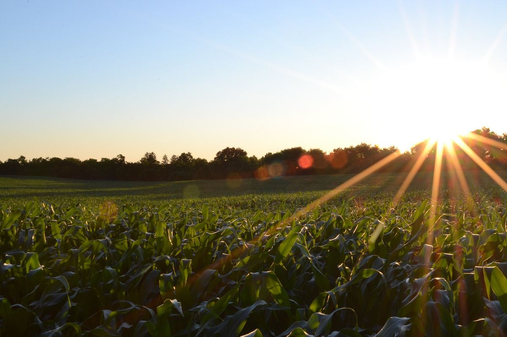

口コミ
このページの声は、制作側が作成した「こんな声が寄せられたら」というイメージ例です。実際のお客様の声ではありません。
イメージ例仕事帰りにふらっと立ち寄って、のんびり選べるお店だったら嬉しいです。
イメージ例朝ごはん用のパンを、家族の分まで見つけられるお店だったらいいなと思います。
イメージ例行く前にInstagramをのぞいて、楽しみにできるお店だったら素敵です。
実際のお店の様子はInstagramでご覧ください。

このページの声は、制作側が作成した「こんな声が寄せられたら」というイメージ例です。実際のお客様の声ではありません。
イメージ例仕事帰りにふらっと立ち寄って、のんびり選べるお店だったら嬉しいです。
イメージ例朝ごはん用のパンを、家族の分まで見つけられるお店だったらいいなと思います。
イメージ例行く前にInstagramをのぞいて、楽しみにできるお店だったら素敵です。
実際のお店の様子はInstagramでご覧ください。
掲載の写真はフリー素材のイメージで、お店の実際の商品・店内・周辺ではありません。日本国外や他の地域で撮影された写真、撮影地が不明な写真を含みます。
電話する 090-5612-7164